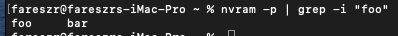

ماك هاي سييرا لم يعد مدعوم من ابل, وانفيديا توقفت عن اصدار تعريفات له, لذلك لم يعد هناك اي نظام ماك مدعوم يدعم كروت انفيديا
اول شي يجب ان نتاكد ان ال Nvram يعمل على جهازك
لكن ما هو ال Nvram ?
Nvram او Non-Volatile Random Access Memory هي عباره عن قطعه ذاكره صغيره يستخدمها نظام الماك لحفظ اعدادت ما بين الاقلاع مثل مستوى سطوع الشاشه و اختيارات تعريف كرت الشاشه
كل الذي علينا لاختبار ال NVram هو وضع هذا الامر في التيرمنال الخاص بالماك, وظيفته تخزين نص في ال nvram, للتاكد انه يحفظ هذه المعلومات.
sudo nvram foo=bar
ثم عمل اعاده تشغيل للجهاز
ثم بعدها قم بفتح التيرمنال مره اخرى وضع هذا الامر
nvram -p | grep -i "foo"

اذا ظهر لك اي نتيجه يعني ال Nvram يعمل اذا لم يظهر شي يعني جهازك لا يدعم NVram داخلي وهو حال معظم اجهزه الكمبيوتر القديمة
اوبن كور
تاكد من تعديل الكونفق:
تحت NVRAM → Delete
فعل LegacyEnable و LegacyOverwrite
كلوفر(لم نعد نستخدمه)
هناك عده طرق اولا جرب مع تعريف AptioMemoryFIx.efi (يجب ان تحذف osxfix#drv اذا كان عندك ) في ملف drivers ثم uefi
اعد التجربه وتاكد اذا يعمل لديك ال Nvram
اذا لم تحل المشكله استخدم تعريف EmuVariableUefi-64.efi يمكنك الحصول عليه من داخل برنامج تثبيت الكلوفر في الماك نزل نسخه ال pkg
تاكد من أخذ نسخه احتياطيه من ملف ال efi الخاص بك لusb خارجي حتى تستطيع الاقلاع مره اخرى اذا لم يعمل الكلوفر بعد التعديلات
ثم عند التثبيت اختار زر custom install
تحت uefi drivers اختار Addditional drivers ثم اختار EmuVariableUefi-64.efi وايضا اختار Install RC Scripts on target volume
بعد التثبيت انقل الكونفق الخاص بك والكيكستات وجميع تعديلاتك الى ملف EFI واعد الاقلاع
تثبيت التعريف
نزل التعريف من هنا
تاكد من التعريف يوافق نسخه الماك والاصدار
بعدها اكمل التثبيت بشكل عادي واعد التشغيل